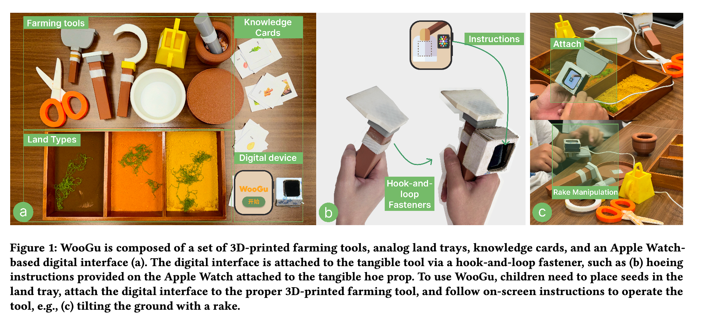

TUI WooGu
A tangible learning experience for food education and embodied interaction.
2025 Fall

This placeholder case study introduces a research-driven tangible user interface for food learning. It can later include study goals, interaction flows, participant findings, and reflections on embodied design.